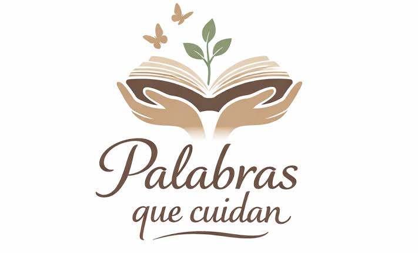

📝 Nuestra Voz: Contar para Cuidar
El lenguaje como herramienta de cambio

🗣️ Por qué sirven las palabras
Cuando entendemos algo y lo explicamos, lo hacemos nuestro. Y cuando lo compartimos, se vuelve de todos. El lenguaje no es solo para comunicarnos: es para transformar lo que sabemos en acción. Por eso investigar, leer y escribir sobre el clima es también una forma de cuidar.
Hemos aprendido qué es El Niño, por qué existe el Super Niño y cómo afecta a Colombia. Ahora no podemos quedarnos callados: tenemos que contarlo. Cada persona que entiende, puede cuidar. Y cada persona que cuida, ayuda.
✍️ Formas de compartir lo que sabemos
No necesitas ser escritor para contar lo que aprendiste. Hay muchas formas de hacerlo:
- Contar en familia: Explica con tus propias palabras por qué hay que cuidar el agua. No uses frases difíciles: lo que se entiende fácil, llega más lejos.
- Escribir mensajes cortos: Pega avisos en el colegio o en casa recordando cerrar la llave, apagar las luces o no tirar basura. Mensajes sencillos se quedan en la mente.
- Cartas a quienes deciden: Escribe a personas que pueden ayudar: profesores, alcaldes, familiares. Diles qué notas que falta y qué propones tú.
- Relatar lo que ves: Pregunta a alguien mayor cómo era el clima antes. Anota lo que te cuente. Esas memorias ayudan a entender el cambio.
- Dibujar y explicar: Una imagen con su mensaje llega rápido a los ojos y al corazón. Combina lo que ves con lo que sientes.
💬 Lo que podemos decir
No necesitamos palabras grandes ni complicadas. Esto es lo importante:
"El clima cambia y nosotros lo notamos. Cuidar el agua, los árboles y el aire no es tarea de otros: es nuestra. Empezamos hoy, con lo que está a nuestro alcance. El cambio se hace de a poquito, pero se hace."
📖 Lo que aprendimos
Este proyecto nos enseñó que todo está conectado: lo que pasa en el mar llega a nuestra tierra. Lo que hace cada persona suma. El agua, el aire, los bosques y nosotros formamos parte de un mismo sistema.
También aprendimos que no estamos solos en esto. Millones de personas en el mundo están cuidando, aprendiendo y actuando. Nuestra voz se une a las suyas. Juntos somos más fuertes.
✨ Para terminar
El futuro no lo escriben solo los científicos ni los gobernantes. Lo escribimos todos, con lo que hacemos cada día. Tú tienes voz, tienes ideas y tienes la fuerza para cambiar las cosas desde tu lugar.
No esperes a que otros lo hagan primero. Empieza tú. Cuida, comparte, explica. Cada palabra que dices y cada gesto que haces es una semilla para el mundo que queremos.
"Las palabras mueven, los ejemplos transforman. Haz las dos cosas."